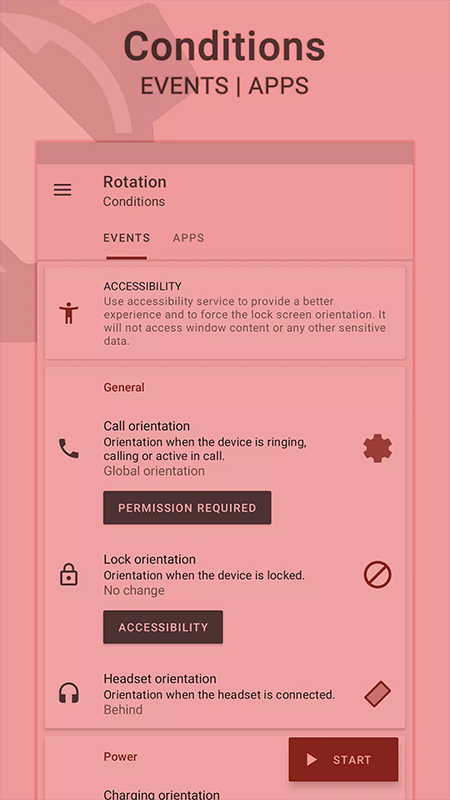

屏幕方向控制工具横评：Rotation 为什么值得单独拎出来讲
安卓上控制屏幕方向的工具不少，但能把这件小事做到极致的屈指可数。用过几款同类之后，Rotation 是唯一一个我愿意长期留在后台的。
这个类目的格局，和 Rotation 站在哪
安卓生态里，"控制屏幕方向"这件事看似简单，实际需求比想象中碎得多。有人嫌系统自动旋转太灵敏、躺着看手机总乱转；有人玩模拟器游戏需要强制横屏、退出后又不想手动切回来；有人装了平板端 App 在手机上跑、默认方向和物理握持总打架。
解决这些痛点的工具五花八门——有的是浮窗开关，有的是系统增强模块，有的依赖 root 改 build.prop。但真正能长期稳定跑在后台、按应用按场景自动切换的，屈指可数。
Rotation 是这个品类里做了超过十年的老牌选手。它既不是最花哨的，也不是知名度最高的——Play 商店里甚至被下架过一阵（隐私合规问题），现在靠rotation官网独立分发活得好好的。但如果你真正用过一段时间，会发现它的核心竞争力不是功能多，而是把一件小事做扎实了。
这篇文章不是功能介绍，是对比。我用过浮窗切换类的、用过 Xposed/Shizuku 方案的、用过 Tasker 单枪匹马硬写方向规则的，今天聊聊 Rotation 比这些方案强在哪、又在哪几个地方确实做了取舍。
它真正好的地方
不需要 root，也不需要 Shizuku
这一点放在现在可能显得没什么——但回想五六年前，安卓上想精细控制屏幕方向，root 几乎是唯一选项。后来 Shizuku 出来了，确实比 root 轻，但本质上还是一个需要配合 adb 授权的中间层，新手上手门槛不低。
Rotation 的方案很朴素：走系统 API，用"修改系统设置"和"显示在其他应用上方"两个权限，加上"使用情况统计"来检测当前前台 App。三个权限搞定全部核心能力，不需要额外工具。
代价当然有——系统 API 能做的事情比 root 少，部分厂商定制系统（MIUI、EMUI）上后台存活更难。但换来的好处是：装上就能跑，出问题卸载重装也干净，不会因为 Shizuku 服务挂了连带影响一堆其他 App。
如果你不是折腾党，不想维护一个 Shizuku 环境，Rotation 几乎是唯一的正规选项——直接去下载就能拿到最新版。
应用规则 + 事件条件，两层触发覆盖大部分场景
同类工具大多只做了"按 App 切方向"这一层——打开某个 App 就强制横屏，关掉就恢复自动。这确实能解决 60% 的场景。
Rotation 在这之上叠了一层事件条件：检测耳机插拔、检测充电状态、检测 Wi-Fi 连接、检测蓝牙设备……两层可以组合——比如"只有在充电 + 连接家里 Wi-Fi 时，才把视频 App 强制横屏"。
这层设计在实际使用中体感非常明显。举个例子，我通勤路上用某个视频 App，手机放口袋里会偶尔误触横屏；但在家看视频固定放支架上，就希望它自动横。没有事件条件的工具做不到这种"同一 App 不同场景不同行为"的区分，只能二选一。
Tasker 插件：把它变成你自动化链条的一环
如果应用规则 + 事件条件还不够——Rotation Premium 提供了 40+ 个 Tasker 插件动作。切方向模式、启停服务、临时覆盖某条规则、查询当前方向状态，全暴露给 Tasker 调用。
这意味着 Rotation 不只是一个独立的方向控制工具，而是可以被你的自动化流程编排的一环。举个我自己在用的场景：晚上 10 点连家里 Wi-Fi + 电量在 80% 以上时，Tasker 调 Rotation 强制竖屏（手机放床头柜竖放）；早上 7 点出门、Wi-Fi 断开时恢复自动旋转。
同类工具里，能提供这么完整的 Tasker 集成的，只有 Rotation 和另一个已经停更几年的老工具。

它做了哪些取舍
说了三个亮点，也要说代价。Rotation 不是完美的，这些取舍你得知道：
后台保活必须花心思。 Rotation 本质是一个常驻后台的服务，Android 8.0 以后系统对后台进程的管控越来越严。开箱即用大概率会被系统杀掉——你必须手动设三层：App 内部开机自启开关、系统自启动权限、电池优化白名单，具体品牌路径可以去rotation文档查。Android 13+ 还要额外给常驻通知权限。少一层，服务说没就没。
这个问题不是 Rotation 独有，但它对后台存活的依赖程度比很多工具高——因为它没有前台 UI 常驻，靠的就是后台静默检测。同类的浮窗工具因为有前台 Activity，反而不太容易被杀。
免费版功能有限。 应用规则免费给，事件条件免费给，但 Tasker 插件、某些高级方向模式（比如锁定当前）、持久化规则这些都在 Premium 里。如果你已经是 Tasker 用户、想把 Rotation 编进自动化链条，不买 Premium 基本等于白装。价格倒不算贵，买断制，没有订阅。
部分高端功能缺席。 比如按窗口而不是按 App 切方向——在多窗口/分屏场景下，同类工具里有做的，Rotation 不支持。再比如通过 adb 命令远程触发方向切换——一些发烧友会用这个，Rotation 也没提供。这些确实是功能上的缺口，但考虑到它不走 root，这些限制也是合理的取舍。
选购结论：谁该选它，谁该选别的
综合下来，我的推荐是这样的：
如果你是普通用户、不想折腾：选 Rotation。 不 root、不 Shizuku、装上就能用、应用规则 + 事件条件覆盖绝大多数日常场景。唯一需要花点时间的就是开机自启和电池白名单那三层设置，设完基本不用再管。
如果你已经是 Tasker 重度用户：选 Rotation Premium。 40+ 插件动作能把方向控制编排进你的整条自动化流程，比单独写方向脚本省太多事。而且 Premium 是买断，不会持续烧钱。
如果你是折腾党、手上有 root：可以试试其他方案。 比如 Shizuku 方案，能做的事情更多（包括按窗口切方向）。但前提是你愿意维护一个 Shizuku 环境，而且能接受部分 App 在 Shizuku 服务重启后短暂失效的情况。
如果你只需要一个浮窗快速切换：不用 Rotation。 找个最轻的浮窗开关就行，几十 KB 那种。Rotation 的优势在自动规则和后台检测，单纯手动切换它反而显得重。
最后说一句
工具这种东西，没有绝对的好坏，只有适不适合。Rotation 把"按应用 + 按场景自动切方向"这件事做到了非 root 方案里的天花板，但它也没试图去做所有事。这种取舍反而让它的定位很清晰——我就是想让我的手机在对的时刻自动用对的方向，不想每次手动切，也不想维护一堆复杂环境。Rotation 满足的就是这个需求。
装上之后别忘了设自启动和电池白名单这三层——设完就踏实了。想把它编进自动化流程的，Premium 配合 Tasker 是目前最成熟的非 root 方案。软件不依赖 Play 商店上架，所有资料我在 GitHub、Gitee、GitCode 都同步了一份备份，防止哪天商店下架了你找不到资源。